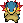
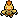

電光一閃Quick Attack
- 屬性
- 一般
- 分類
- 物理
- 威力
- 40
- 命中
- 100%
- SP
- 10
- 冷卻
- 1 秒（物理組）
- 範圍
- 衝刺
- 距離
- 3 格
- 段數
- 1
- 前搖
- 0.05 秒
- 優先度
- 1
- 接觸
- 是
招式分類跟隨招式的 屬性 （第三世代規則，與火紅／葉綠相同）：火、水、草、電、超能力、冰、龍、惡屬性招式一律是特殊招式；其他屬性是物理招式（例外：分擔痛楚）。因此暗影球是物理招式，攀瀑是特殊招式。這是刻意設計，不是錯誤。
即時戰鬥效果
優先度 +1。沒有目標時：朝訓練家面向的方向衝刺 2 格（衝刺冷卻 6 秒）。
使用者衝向目標並打擊。
即時戰鬥設計備註：
- 合理（已受 SP／冷卻限制），維持原案。
- 寶可夢戰爭・衝刺：沒有目標時＝朝前方直線衝撞。
升級時學會
 波波 Lv 13
波波 Lv 13 比比鳥 Lv 13
比比鳥 Lv 13 大比鳥 Lv 1大比鳥 Lv 13
大比鳥 Lv 1大比鳥 Lv 13 小拉達 Lv 7
小拉達 Lv 7 拉達 Lv 1拉達 Lv 7
拉達 Lv 1拉達 Lv 7 皮卡丘 Lv 11
皮卡丘 Lv 11 雷丘 Lv 1
雷丘 Lv 1 六尾 Lv 13
六尾 Lv 13 九尾 Lv 1
九尾 Lv 1 小火馬 Lv 1
小火馬 Lv 1 烈焰馬 Lv 1
烈焰馬 Lv 1 飛天螳螂 Lv 1
飛天螳螂 Lv 1 電擊獸 Lv 1伊布 Lv 23水伊布 Lv 23雷伊布 Lv 23
電擊獸 Lv 1伊布 Lv 23水伊布 Lv 23雷伊布 Lv 23 火伊布 Lv 23
火伊布 Lv 23 火球鼠 Lv 19
火球鼠 Lv 19 火岩鼠 Lv 21
火岩鼠 Lv 21
火爆獸 Lv 21 尾立 Lv 7
尾立 Lv 7 大尾立 Lv 1大尾立 Lv 7
大尾立 Lv 1大尾立 Lv 7 蜻蜻蜓 Lv 6
蜻蜻蜓 Lv 6 太陽伊布 Lv 23
太陽伊布 Lv 23 月亮伊布 Lv 23
月亮伊布 Lv 23 天蠍 Lv 20
天蠍 Lv 20 巨鉗螳螂 Lv 1
巨鉗螳螂 Lv 1 狃拉 Lv 8
狃拉 Lv 8 戰舞郎 Lv 19
戰舞郎 Lv 19 電擊怪 Lv 1
電擊怪 Lv 1 雷公 Lv 31
雷公 Lv 31 木守宮 Lv 11
木守宮 Lv 11 森林蜥蜴 Lv 1森林蜥蜴 Lv 11
森林蜥蜴 Lv 1森林蜥蜴 Lv 11 蜥蜴王 Lv 1蜥蜴王 Lv 11
蜥蜴王 Lv 1蜥蜴王 Lv 11 火稚雞 Lv 28
火稚雞 Lv 28
力壯雞 Lv 32 火焰雞 Lv 32傲骨燕 Lv 8
火焰雞 Lv 32傲骨燕 Lv 8 大王燕 Lv 1大王燕 Lv 8
大王燕 Lv 1大王燕 Lv 8 長翅鷗 Lv 31
長翅鷗 Lv 31 溜溜糖球 Lv 7
溜溜糖球 Lv 7 雨翅蛾 Lv 1雨翅蛾 Lv 7
雨翅蛾 Lv 1雨翅蛾 Lv 7 落雷獸 Lv 17
落雷獸 Lv 17 雷電獸 Lv 17
雷電獸 Lv 17 正電拍拍 Lv 10
正電拍拍 Lv 10 負電拍拍 Lv 10
負電拍拍 Lv 10 電螢蟲 Lv 17
電螢蟲 Lv 17 甜甜螢 Lv 17
甜甜螢 Lv 17 貓鼬斬 Lv 7阿勃梭魯 Lv 13
貓鼬斬 Lv 7阿勃梭魯 Lv 13 姆克兒 Lv 5
姆克兒 Lv 5 姆克鳥 Lv 1姆克鳥 Lv 5
姆克鳥 Lv 1姆克鳥 Lv 5 姆克鷹 Lv 1姆克鷹 Lv 5
姆克鷹 Lv 1姆克鷹 Lv 5 帕奇利茲 Lv 5
帕奇利茲 Lv 5 泳圈鼬 Lv 3
泳圈鼬 Lv 3 浮潛鼬 Lv 1浮潛鼬 Lv 3
浮潛鼬 Lv 1浮潛鼬 Lv 3 捲捲耳 Lv 16
捲捲耳 Lv 16 長耳兔 Lv 16
長耳兔 Lv 16 利歐路 Lv 1
利歐路 Lv 1 路卡利歐 Lv 1
路卡利歐 Lv 1 瑪狃拉 Lv 1瑪狃拉 Lv 8
瑪狃拉 Lv 1瑪狃拉 Lv 8 電擊魔獸 Lv 1
電擊魔獸 Lv 1 遠古巨蜓 Lv 1遠古巨蜓 Lv 6
遠古巨蜓 Lv 1遠古巨蜓 Lv 6 葉伊布 Lv 22
葉伊布 Lv 22 冰伊布 Lv 22
冰伊布 Lv 22 天蠍王 Lv 16
天蠍王 Lv 16招式光碟
 一般屬性招式光碟 ・少見（每打倒一隻該屬性寶可夢 1%，由 119 個招式分配）
一般屬性招式光碟 ・少見（每打倒一隻該屬性寶可夢 1%，由 119 個招式分配）
可以教會 469 隻寶可夢：遊戲中的每一隻都能學（一般屬性招式不限屬性）。